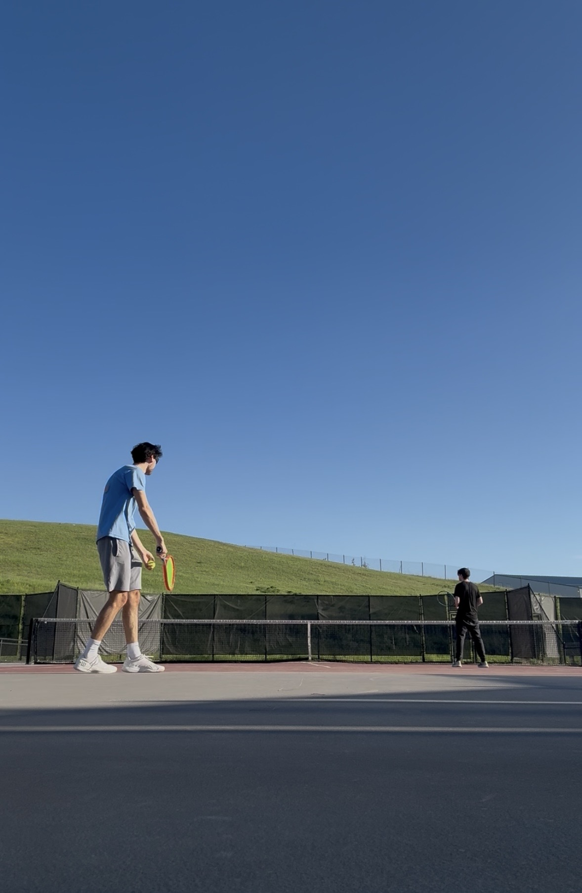

Serving is usually different in doubles, beacuse after you serve you only need to cover half the court. This allows you to stand wider and generally makes the serve a little bit easier. Additionally, the other player is able to stand wherever they want, so this allows for some interesting strategies. You can have two players back which is two people at the baseline, or one up one back. When playing one up one back, you can even be in an I formation, which has the server stand where they usually would for singles. It is best to talk to your partner and determine which formation you wnat to run.

This is the most common positioning for doubles
Don't hyperfixate on where you and your partner are positioned. As long as the serve is going in and points are being played you are going a good job.